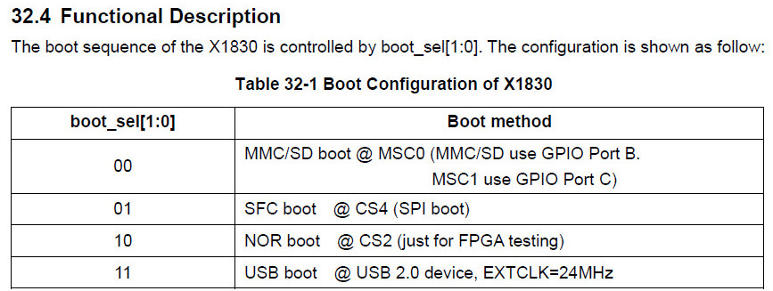
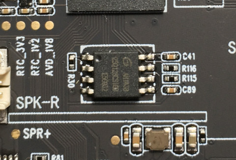
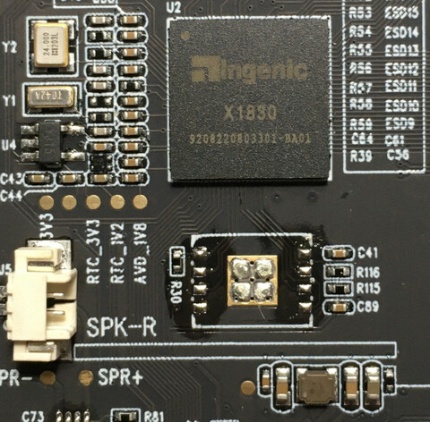
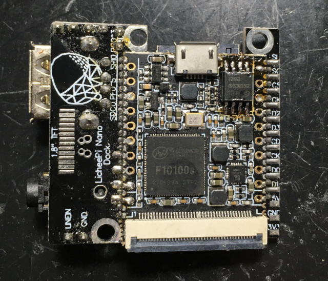

X1830支援多種開機模式

U-Boot SPL 2013.07-00018-g684b601-dirty (Jan 20 2021 - 03:10:07) ERROR EPC 0x800e1481 GD25Q128C 00c84018 U-Boot 2013.07-00018-g684b601-dirty (Jan 20 2021 - 03:10:07) Board: GKD350 DRAM: 128 MiB Now running in RAM - U-Boot at: 87fe4000 U-Boot SPL 2013.07-00018-g684b601-dirty (Jan 20 2021 - 03:08:05) ERROR EPC 0x87fe45ac U-Boot 2013.07-00018-g684b601-dirty (Jan 20 2021 - 03:08:05) Board: GKD350 DRAM: 128 MiB Now running in RAM - U-Boot at: 87fe4000 MMC: msc: 0 *** Warning - bad CRC, using default environment In: serial Out: serial Err: serial ## Booting kernel from Legacy Image at 80600000 ... Image Name: Linux-3.10.14 Image Type: MIPS Linux Kernel Image (gzip compressed) Data Size: 4050288 Bytes = 3.9 MiB Load Address: 80010000 Entry Point: 80444010 Verifying Checksum ... OK Uncompressing Kernel Image ... OK Starting kernel ...
P.S. 短路SPI後，開機並沒有任何訊息
因此，UBoot和uImage程式都是位於SPI Flash，25Q128CS1G8容量為16MB，因此，剛好可以塞下UBoot和uImage程式



$ sudo sunxi-fel -p spiflash-read 0 16777216 gkdmini_spiflash.bin
確定是否符合相關資訊
$ strings gkdmini_spiflash.bin | grep -i u-boot
U-Boot
U-Boot SPL 2013.07-00018-g684b601-dirty (Jan 20 2021 - 03:10:07)
Now running in RAM - U-Boot at: %08lx
u-boot
U-Boot
U-Boot 2013.07-00018-g684b601-dirty (Jan 20 2021 - 03:10:07)
提取uImage
$ file gkdmini_spiflash.bin
gkdmini_spiflash.bin: data
$ od -A d -t x1 gkdmini_spiflash.bin | grep '1f 8b 08'
0262208 1f 8b 08 00 00 00 00 00 02 03 ec bd 0f 74 5c d5
$ dd if=gkdmini_spiflash.bin of=uImage bs=1 skip=262144
$ file uImage
uImage: u-boot legacy uImage, Linux-3.10.14, Linux/MIPS, OS Kernel Image (gzip), 2505543 bytes, Tue Jan 26 02:39:41 2021, Load Address: 0x80010000, Entry Point: 0x803963B0, Header CRC: 0xDE68DED0, Data CRC: 0x0C174FB3
$ dd if=gkdmini_spiflash.bin of=uImage_no_header bs=1 skip=262208
$ file uImage_no_header
uImage_no_header: gzip compressed data, max compression, from Unix, original size 4294967295
$ zcat uImage_no_header > kernel
$ strings kernel | grep Linux
Linux version 3.10.14 (root@avrman-virtual-machine) (gcc version 5.2.0 (Ingenic r3.2.0-gcc520 2017.08-24) ) #3 PREEMPT Mon Jan 25 21:39:37 EST 2021
No init found. Try passing init= option to kernel. See Linux Documentation/init.txt for guidance.
Linux
[%s] Warning! Received an indication that the LUN assignments on this target have changed. The Linux SCSI layer does not automatically remap LUN assignments.
Warning! Received an indication that the LUN assignments on this target have changed. The Linux SCSI layer does not automatically remap LUN assignments.
[%s] Warning! Received an indication that the operating parameters on this target have changed. The Linux SCSI layer does not automatically adjust these parameters.
Warning! Received an indication that the operating parameters on this target have changed. The Linux SCSI layer does not automatically adjust these parameters.
6Advanced Linux Sound Architecture Driver Initialized.
Advanced Linux Sound Architecture Driver Version k%s.
Linux